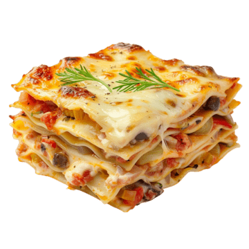

Lasagna

Description:
Lasagna is a classic Italian comfort dish made by layering sheets of pasta with rich meat sauce, creamy béchamel or ricotta mixture, and melted cheese. The dish is baked until golden and bubbly, resulting in a hearty, flavorful meal that’s perfect for gatherings or family dinners.
Ingredients:
- 1 pound of ground meat
- diced onion
- can of tomato sauce
- 2 tablespoons of parsley
- 1 glove of garlic
- a dash of sugar
- salt
- black pepper
- noodles
- cheese
- eggs
Steps:
- Cook the ground meat in a skillet until browned and crumbly. Add the onion and continue cooking until it's translucent. Stir in the canned tomato products, half of the parsley, garlic, basil, 1.5 teaspoons of salt, oregano, and sugar.
- Boil the lasagna noodles in lightly salted water until they're al dente.
- Mix cottage cheese, Parmesan cheese, eggs, the remaining parsley, the remaining salt, and pepper in a bowl.
- Layer the ingredients according to the recipe (starting with sauce and ending with mozzarella) until the lasagna is assembled.
- Cover with foil and bake in the preheated oven for about half an hour. Remove the foil and continue baking until the top is golden brown
Home